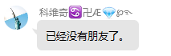

由Maxing博士研发的十分甚至九分好的系统
开发历程
传说在侏罗纪时期，有一位老头，开发出了米米逝戒，但当时没有电脑，于是便把代码刻在了石头上，直到后来，日本著名的Maxing博士开发出了Manjaor系统，解决了这个问题
开发灵感
“Linux用宏内核，太落后了，建议用Minix”——Maxing博士想着
于是，Maxing博士便对着微内核冲了一发，突发奇想，开发了一款基于微内核的操作系统Manjaor。
Manjaor的出现，让各大媒体纷纷响应，为自家马桶装上了Manjaor，性能MAXing的系统立马让人们感受到了Manjaor系统的神奇之处。
但是，Manjaor系统的大火，必然会引来危机。
“Manjaor不好！”一位日本人说，”Manjaor是三体人的阴谋”。
据Maxing博士的盒子介绍，这位日本人叫Mailset，他经常向三体舰队发射静子，这也是三体人没有入侵地球的原因。
Maxing博士得到这位日本人的个人信息后，又扒出了几位吉尔吉斯坦黑客的阴谋，于是，它向那几位吉尔吉斯坦黑客对话，让他们停止使用SSHit，自此，Manjaor系统再度风靡全球，成为当今占有率第一大的系统。
系统功能
一键冲到语文老师脸上
一键配置Dacker
运行Jvav程序，编译运行于马桶的文件
使用系统的网络里带功能，可以让你随时随地开盒
运用SSHit攻击gov网站
一键入侵BianPaoOS
一键起诉到国际法院
他们都这样评价Manjaor
- 你回答晚了。
- 我有律师。
- 你们毁了我的一切
- 你操我。
- 小心我给你打电话
- 转我20不开你盒
- 一群sb
- 多发几个红包，我就原谅你。
- 小心我上你家找你。
 你们等着。
你们等着。- “快点道歉” “不可能 呵呵”
- 我要红包，我要红包。
- 这次真抑郁了
- 死了就听不见了。
- 他已经退出网络圈了。
- 本来想和你们调解调解，当个朋友。
- 希望你也就是我，老公天开开心心的， 晚上不要人哭，一个人难过。
- 世界上没有光。随着人类的发展，人类心中的光明已经被磨平了。
- 为什么是静脉注射氯化钠?
（马博士在找无痛自杀方法) - 已经没有朋友了。
- 你们的能力太强了。连我家处男你们不是都已经查出来了吗?
本文采用CX-ES-114.514协议，转载请注明出处
Author: 伟大的MaXing上帝
Author: 伟大的MaXing上帝